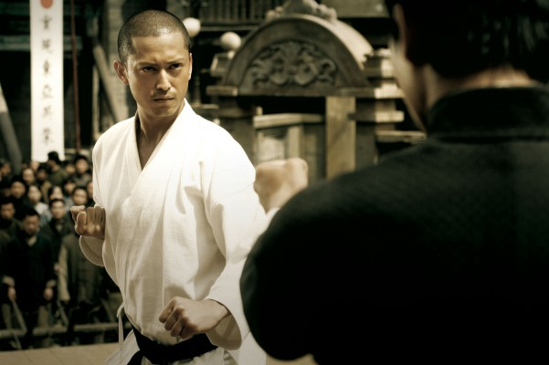

#11874 Charisma


 IMDB-Wertung: 6.9 / 10
IMDB-Wertung: 6.9 / 10  Metascore: 0
Metascore: 0 
Goro arbeitet bei einer Spezialeinheit der Polizei. Bei der Geiselnahme eines Parlamentsmitgliedes übergibt ihm der Kidnapper eine geheimnisvolle Botschaft: Die Ordnung der Welt müsse wieder hergestellt werden. Goro schafft es nicht, den Kidnapper daran zu hindern, einen Kollegen zu erschießen. Nach diesem Vorfall wird er vorläufig vom Dienst suspendiert, und er zieht sich aufs Land zurück. Dort entdeckt er einen merkwürdigen Baum, der scheinbar als einziger im weiten Umkreis noch nicht abgestorben ist. Ein junger Mann hält diesen Baum namens “Charisma” mit Infusionen am Leben, weil er glaubt, dass es sich um ein sehr besonderes Exemplar handelt. Die Botanikerin Mitsuko ist dagegen der Ansicht, dass der Baum alles um sich herum zerstört und vielleicht auch bald den Weltuntergang auslösen wird.
Jahr: 1999
Dauer: 104 Minuten
FSK:
Land: Japan Studio: NikkatsuTonspuren:
Untertitel:
Auflösung: SD (576x320) Größe: 699 MB
Genre: Drama
Regisseur: Kiyoshi Kurosawa
Drehbuch: Kiyoshi Kurosawa
Soundtrack: Gary Ashiya
Darsteller:
 Kôji Yakusho als Goro Yabuike
Kôji Yakusho als Goro Yabuike-  Hiroyuki Ikeuchi als Naoto Kiriyama
- Ren Osugi als Satoshi Nakasone
- Yoriko Dôguchi als Chizuru Jinbo
 Yutaka Matsushige als Nekoshima
Yutaka Matsushige als Nekoshima- Masahiro Toda als Young Officer
- Jun Fubuki als Mitsuko Jinbo
- Akira Ohtaka als Tatsuo Tsuboi
- Sachiko Meguro als Hanako
- Masayuki Shionoya als Bucho
- Kôichi Imamura als Young Man
- Yôji Tanaka als Sugishita
- Atsushi Nishida als Nishi
- Masaaki Nagata als Diet Member
- Setchin Kawaya als Worker
- Kagetora Miura als
- Shûhô Miyashita als
- Shigeo Ohsako als
- Tôzô Yamazaki als
- Jun Yoshida als
Datei: X:\NEU\Charisma (1999, FSK, 576x320).avi seit 02.10.2019
 Es gibt insgesamt 187 Filme in der Gruppe 'NEU'
Es gibt insgesamt 187 Filme in der Gruppe 'NEU'